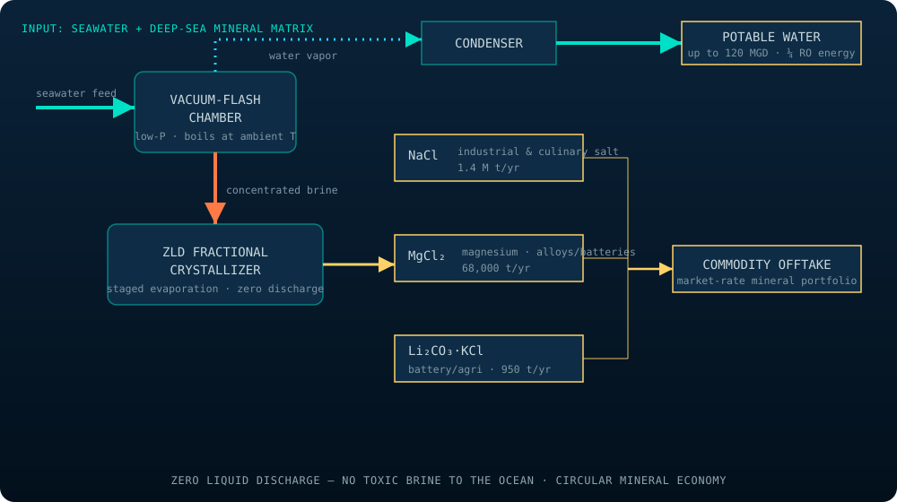

TROIB · Engineering Brief
Zero Liquid Discharge and Marine Mineral Recovery
A shore-based Southern California Deep Sea Water Utilization train: vacuum-flash desalination producing up to 120 MGD of potable water, followed by zero-liquid-discharge fractional crystallization of the brine into salts, magnesium, and battery-grade minerals — with no toxic discharge to the sea.
Abstract
The TROIB Southern California zone is a shore-based, non-power Deep Sea Water Utilization (DSWU) facility. It first desalinates seawater by vacuum-flash evaporation — boiling seawater at ambient temperature under low pressure, at roughly one-quarter the energy of high-pressure reverse osmosis — producing up to 120 MGD of potable water. The concentrated brine is then not discharged but processed through a Zero Liquid Discharge (ZLD) train of sequential, solubility-driven crystallization stages that fractionate the dissolved salts: sodium chloride first, then magnesium compounds, then trace battery-grade species such as lithium carbonate and potassium chloride. The result is a saleable mineral stream — ≈1.4 M t/yr of salts, 68,000 t/yr of magnesium, and ≈950 t/yr of battery-grade minerals at ten-year scale — and the elimination of the hypersaline brine plume that has triggered environmental litigation against conventional desalination. This brief develops the seawater-composition basis, the staged crystallization logic, and the product-yield accounting.
Seawater as Feedstock
Seawater is not merely a water source; it is a dilute, continuously replenished ore body. Standard seawater carries ≈35 g/L of total dissolved solids (TDS), dominated by six major ions. Table 1 lists the conventional major-ion composition that defines the TROIB feedstock.
| Ion | Species | Concentration | % of TDS |
|---|---|---|---|
| Chloride | Cl− | ~19.4 g/L | 55.0 % |
| Sodium | Na+ | ~10.8 g/L | 30.6 % |
| Sulfate | SO42− | ~2.7 g/L | 7.7 % |
| Magnesium | Mg2+ | ~1.3 g/L | 3.7 % |
| Calcium | Ca2+ | ~0.41 g/L | 1.2 % |
| Potassium | K+ | ~0.39 g/L | 1.1 % |
| Trace (Li, B, Br, …) | — | <0.1 g/L | <0.7 % |
The TROIB design treats every one of these ions as a product rather than a waste. The 4 °C deep-ocean intake shared with the broader TROIB network supplies clean, nutrient-rich, low-biofouling feedwater drawn below the photic zone, simplifying pretreatment relative to a surface intake.
Vacuum-Flash Desalination
Reverse osmosis forces water through a membrane against osmotic pressure, demanding high-pressure pumping (typically 55–70 bar) and producing a hypersaline reject. TROIB instead uses vacuum-flash evaporation: seawater is admitted to a chamber held below the saturation pressure for its temperature, so a fraction of it “flashes” to vapour at ambient temperature without external boiling heat. The vapour is condensed against the cold deep-seawater stream to yield distilled potable water, while the chamber liquor grows progressively more concentrated.
Because the phase change is driven by pressure reduction rather than membrane pressurization or thermal boiling, the process runs at roughly one-quarter the energy of high-pressure RO in this conceptual design, and it tolerates the rising salinity that would foul or osmotically defeat a membrane. Multiple flash stages in series progressively concentrate the brine toward the saturation points needed for crystallization.

Zero Liquid Discharge by Fractional Crystallization
Once desalination has removed most of the water, the remaining concentrated brine enters the ZLD train. The governing principle is differential solubility: as water is progressively removed, each dissolved salt reaches saturation and crystallizes at a different point in the concentration sequence. By controlling the degree of evaporation and temperature at each stage, the salts are separated rather than co-precipitated into a useless mixed sludge.
Crystallization sequence
Stage 1 — sodium chloride. NaCl is by far the most abundant salt and the least soluble of the majors at high concentration, so it crystallizes first as the brine is concentrated, producing the bulk salt product. Stage 2 — magnesium compounds. With NaCl removed, further evaporation drives magnesium chloride / magnesium hydroxide precipitation, the basis of the magnesium product. Stage 3 — trace battery-grade species. The final mother liquor, now enriched in the most soluble and rarest ions, is processed to recover lithium carbonate (Li2CO3) and potassium chloride (KCl). Because each stage takes its feed from the prior stage’s residual liquor, no stream leaves the plant as liquid waste — the defining property of Zero Liquid Discharge.
Product Yields at Ten-Year Scale
Tying the crystallization train to the major-ion inventory of the processed feed gives the illustrative ten-year product slate in Table 2. The salt tonnage tracks the dominant Na+/Cl− fraction; magnesium tracks the ≈1.3 g/L Mg2+ content; and the battery-grade stream represents the small but high-value lithium and potassium recovery from the final liquor.
| Product | Principal species | Yr-10 yield | Source fraction |
|---|---|---|---|
| Bulk salts | NaCl | ~1.4 M t/yr | Na+ / Cl− majors |
| Magnesium | MgCl2 / Mg(OH)2 | ~68,000 t/yr | Mg2+ (~3.7 % TDS) |
| Battery-grade minerals | Li2CO3, KCl | ~950 t/yr | trace / final liquor |
| Potable water | H2O | up to 120 MGD | vacuum-flash distillate |
These four outputs convert a single seawater intake into a multi-product revenue stream — water utility, commodity salt, industrial magnesium, and critical battery minerals — without the fuel cost or carbon footprint of mining or high-pressure membrane desalination.
Environmental and Regulatory Advantage
Conventional seawater desalination's central liability is its reject stream: a hypersaline, often warm brine discharged back to the coastal zone, where its density causes it to blanket and de-oxygenate the seabed. This plume has been the basis of permitting delays and litigation against major desalination projects in California and elsewhere.
By design, the TROIB ZLD train produces no liquid effluent. Every dissolved constituent leaves the plant as a dry, saleable solid, and the only water leaving is potable. This removes the brine-discharge plume entirely, converting the single largest regulatory and environmental obstacle of coastal desalination into a revenue-generating product stream — and aligning the facility with zero-discharge permitting expectations rather than fighting them.
Nomenclature
| DSWU | Deep Sea Water Utilization (shore-based, non-power) |
|---|---|
| ZLD | Zero Liquid Discharge |
| TDS | Total Dissolved Solids (g/L) |
| RO | Reverse Osmosis |
| MGD | Million Gallons per Day |
| NaCl | Sodium chloride (bulk salt product) |
| MgCl2 | Magnesium chloride / magnesium product |
| Li2CO3 | Lithium carbonate (battery-grade) |
| KCl | Potassium chloride |
Selected References (illustrative)
- U.S. Department of Energy. Zero Liquid Discharge and Resource Recovery from Desalination Brines. Conceptual reference, illustrative.
- National Alliance for Water Innovation. Selective Mineral Recovery from Hypersaline Brines. Illustrative bibliographic entry.
- Stewart, R. H. Introduction to Physical Oceanography: Seawater Composition and Salinity. Illustrative bibliographic entry.
- State Water Resources Control Board. Desalination Brine Discharge: Ocean Plan Amendment Guidance. Conceptual reference, illustrative.
- TROIB Project. Engineering Brief TROIB-EB-01: Closed-Cycle Ammonia OTEC. Companion document.